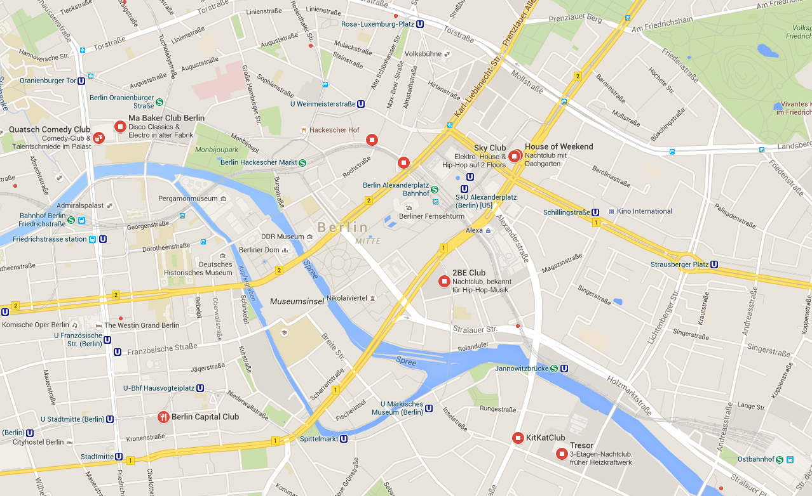

Eine wunderbare Heiterkeit hat meine ganze Seele eingenommen, gleich den süßen Frühlingsmorgen, die ich mit ganzem Herzen genieße. Ich bin allein und freue mich meines Lebens in dieser Gegend, die für solche Seelen geschaffen ist wie die meine.
 Ich bin so glücklich, mein Bester, so ganz in dem Gefühle von ruhigem Dasein versunken, daß meine Kunst darunter leidet. Ich könnte jetzt nicht zeichnen, nicht einen Strich, und bin nie ein größerer Maler gewesen als in diesen Augenblicken. Wenn das liebe Tal um mich dampft, und die hohe Sonne an der Oberfläche der undurchdringlichen Finsternis meines Waldes ruht, und nur einzelne Strahlen sich in das innere Heiligtum stehlen, ich dann im hohen Grase am fallenden Bache liege, und näher an der Erde tausend mannigfaltige Gräschen mir merkwürdig werden; wenn ich das Wimmeln der kleinen Welt zwischen Halmen, die unzähligen, unergründlichen Gestalten der Würmchen
Ich bin so glücklich, mein Bester, so ganz in dem Gefühle von ruhigem Dasein versunken, daß meine Kunst darunter leidet. Ich könnte jetzt nicht zeichnen, nicht einen Strich, und bin nie ein größerer Maler gewesen als in diesen Augenblicken. Wenn das liebe Tal um mich dampft, und die hohe Sonne an der Oberfläche der undurchdringlichen Finsternis meines Waldes ruht, und nur einzelne Strahlen sich in das innere Heiligtum stehlen, ich dann im hohen Grase am fallenden Bache liege, und näher an der Erde tausend mannigfaltige Gräschen mir merkwürdig werden; wenn ich das Wimmeln der kleinen Welt zwischen Halmen, die unzähligen, unergründlichen Gestalten der Würmchen
 Jemand musste Josef K. verleumdet haben, denn ohne dass er etwas Böses getan hätte, wurde er eines Morgens verhaftet. »Wie ein Hund!« sagte er, es war, als sollte die Scham ihn überleben. Als Gregor Samsa eines Morgens aus unruhigen Träumen erwachte, fand er sich in seinem Bett zu einem ungeheueren Ungeziefer verwandelt.
Jemand musste Josef K. verleumdet haben, denn ohne dass er etwas Böses getan hätte, wurde er eines Morgens verhaftet. »Wie ein Hund!« sagte er, es war, als sollte die Scham ihn überleben. Als Gregor Samsa eines Morgens aus unruhigen Träumen erwachte, fand er sich in seinem Bett zu einem ungeheueren Ungeziefer verwandelt.
Most Interesting Places
| Titel |
Typ |
Location |
Visits |
Rating |
|
| Burgerbude |
Restaurant |
Kreuzberg |
234 |
5 |
|
|
| Rooftop |
Bar |
Mitte |
543 |
5 |
|
|
| Strand |
Ort |
Ostsee |
21 |
5 |
|
|
| Coffe Shop |
Café |
Berlin |
312 |
5 |
|
|
